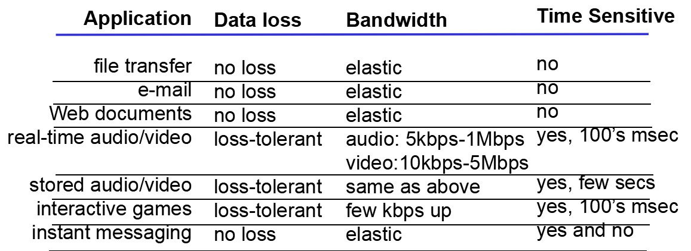
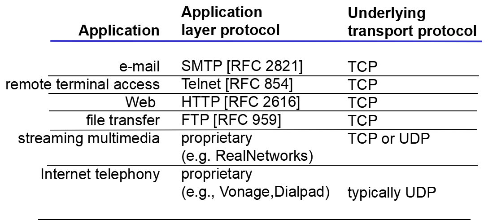
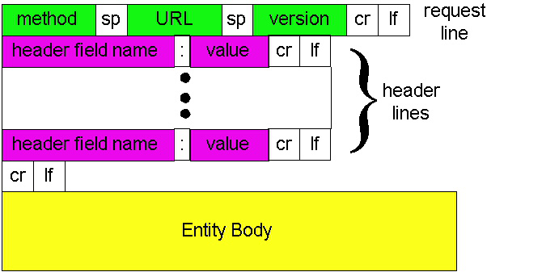
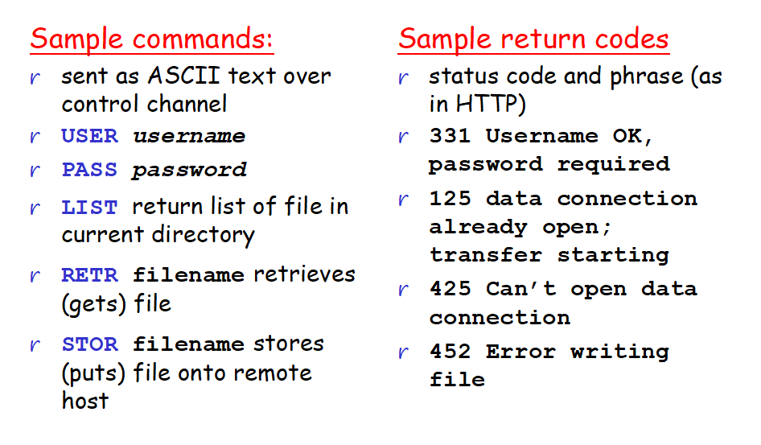
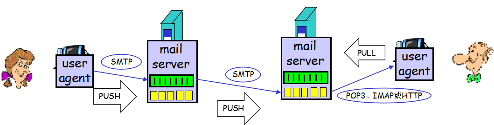
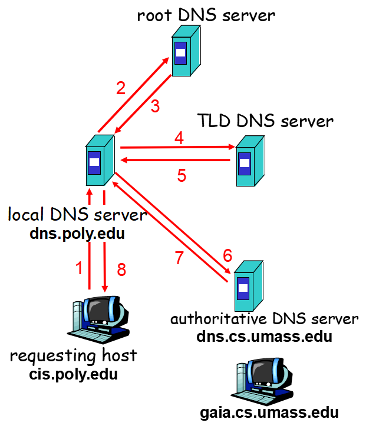
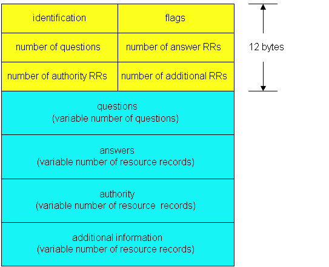

ComputerNetwork第二章
计算机网络学习心得
第二章 应用层
关键术语
- P2P architecture(P2P 体系结构)
- socket(套接字)
- loss-tolerant application(容忍丢失应用)
- bandwidth-sensitive application(带宽敏感应用)
- elastic application(弹性应用)
- HTTP(HyperText Transfer Protocol,超文本传输协议)
- stateless protocol(无状态协议)
- non-persistent connection(非持续连接)
- persistent connection(持续连接)
- RTT(Round-Trip Time，往返时间)
- Top-level Domain(顶级域)
- DHT(分布式散列表)
主要内容与问题
应用层协议原理
当开发一个应用时，我们要为其选择合适的运输层协议，从可靠数据传输，吞吐量，定时和安全性四个方面来选择运输层协议。 具有吞吐量要求的应用被称为带宽敏感应用，必须至少在某个带宽大小下才能传输数据。而elastic弹性应用则能根据情况利用当前吞吐量。电子邮件、文件传输和Web传输都属于弹性应用。当然了，吞吐量越多越好~
运输层协议也能提供定时保证。对于一些实时交互性强的应用程序，在规定时间内发送并接受数据就显得重要。网络电话，网络游戏等等。
TCP服务
TCP服务包括面向连接服务和可靠数据传输服务- 面向连接服务：在应用层报文开始流动之前，TCP让客户端和服务器互相交换运输层控制信息，称为握手。然后两个进程的套接字(socket)之间就开始建立一个TCP连接，这条连接是全双工的。当报文发送完毕时，这个连接就必须拆除。
- 可靠数据传输服务：进程能依靠TCP无差错，按适当顺序交付数据。
- TCP和UDP都不提供加密机制。所以有TCP加强版SSL(安全套接字层)，SSL能加密，且SSL是在应用层上实现的。SSL有自己的API，发送端和接收端分别加密和解密，其余过程和传统TCP一样。
UDP服务
UDP无连接，所以在两个进程套接字之间无握手过程。提供不可靠数据传输，不一定送到，而且可能乱序。也没有拥塞控制机制，可以以它选择的任何速率向下层(网络层)注入数据。UDP看起来很多缺点啊。。。TCP和UDP都没有吞吐量和定时保证这两种服务。

Web和HTTP
从这里才正式进入应用层的讲解。Web应用采用的协议就是HTTP。
HTTP使用TCP为支撑运输协议，HTTP协议下，服务器不会保存客户信息(故称为一种无状态协议)。同时Web也是使用了Client-Server应用程序体系结构。
- HTTP既支持非持续连接也支持持续连接，默认是持续连接。 #####
- Non-Persistent Connection：假如一个Web有一个HTML文件和十张图片，那就总共进行11次TCP连接，每个TCP连接只传输一个请求报文和一个响应报文。 一个对象2个RTT。
非持续连接是HTTP/1.0 - Persistent Connection：一个对象一个RTT，持续连接是HTTP/1.1
- HTTP报文格式
HTTP request message：
GET /somedir/page.html HTTP/1.1
Host: www.someschool.edu
User-agent: Mozilla/4.0
Connection: close
Accept-language:fr
一个请求报文可以有更多行或者至少一行

方法种类：GET, POST, HEAD, PUT, DELETEHTTP response message:
HTTP/1.1 200 OK status line (protocol status code status phrase)
Connection close (header line)
Date: Thu, 06 Aug 1998 12:00:15 GMT
Server: Apache/1.3.0 (Unix)
Last-Modified: Mon, 22 Jun 1998…
Content-Length: 6821
Content-Type: text/html (header line)
data data data data data … (entity body)
响应状态码：- 200 OK
- 301 Moved Permanently 请求对象被永久转移了，新的URL定义在响应报文的首部行中，客户软件将自动获取新的URL
- 400 Bad Request 通用差错，该请求不被服务器所理解
- 404 Not Found 请求的页面不存在
- 505 HTTP Version Not Supported 服务器不支持请求报文所使用的HTTP协议版本
用户与服务器的交互：cookie
cookie用于为HTTP追踪用户信息(因为前面提到过HTTP是无状态的，不保留客户端信息)，cookie技术有四个组件：- HTTP response message中的一个cookie首部行
- HTTP request message中的一个cookie首部行
- 在用户端系统中保留一个cookie文件，由用户的浏览器进行管理
- 位于Web站点的一个后端数据库
用户首次访问一个站点时，就向服务器提供了一个用户标识，在后继会话中，浏览器向服务器传递一个cookie首部，从而向该服务器标识了用户。
Web cache
Web缓存器也叫代理服务器(proxy server)。所以也就是说我们平时用的代理服务器也是具有缓存作用的。当其收到客户请求的时候，Web cache先查看本地有无请求对象的副本，如果有，web cache就不用访问客户的初衷服务器，直接将客户需要的对象副本返回给客户。如果没有副本，则与初衷服务器建立连接，获取所需对象，保存副本，回应给客户。
Web cache的优点：可以大大减少对客户请求的响应时间。可以减少接入链路到因特网的通信量。
文件传输协议：FTP
FTP也是由运输层TCP协议支持哒。FTP使用了两个并行的TCP连接，一个称作控制连接(control connection)，另一个称作数据连接(data connection)。控制连接用来传输控制信息，如用户标识，口令，put，get命令等等。而数据连接则用来实际发送文件。因为FTP比HTTP多用了一个TCP控制连接，所以FTP的控制信息是带外(out-of-band)传送的。HTTP的控制信息是带内(in-band)传送的。
FTP的TCP控制连接走21端口，TCP数据连接走20端口。
FTP先在服务器和客户之间，通过21端口建立TCP控制连接，然后再建立数据连接。发完一个文件以后，数据连接关闭，如果还需要发则需要重新建立数据连接。服务器与客户结束会话的时候，控制连接才关闭。同时，FTP在整个会话期间保留用户的状态信息，对用户状态进行追踪。
还有FTP的常见命令和常见响应，懒得打字直接贴图了。

注意：LIST指令请求服务器送回当前远程目录的文件列表，这个列表是经过新建立的数据连接发送的而不是通过控制连接发送。
因特网中的电子邮件：SMTP协议
SMTP这个应用层协议也是走TCP传输的(因为TCP可靠嘛)。邮件是通过接收方和发送方两者都有邮件服务器，这两个服务器先经过SMTP握手之后建立TCP连接直接发送的。不经过中间服务器中转~
另外，SMTP是持续连接，在两个邮件服务器之间建立一个TCP连接之后，就发送所有这两者之间的邮件，才关闭TCP连接。
SMTP走25端口~
SMTP与HTTP对比：如果报文中有非7比特ASCII字符或是二进制数据(媒体文件之类)，SMTP必须按照7比特ASCII编码，而HTTP则没有这种限制。其次，HTTP每个对象都有一个响应报文，而SMTP则把所有报文的对象都放到一个报文中。

- POP3 and IMAP
POP3服务器在会话过程中不保留状态信息，IMAP保留用户状态信息。
POP3很简单，功能少，而IMAP很复杂，实现的功能也很多。
POP3走110端口~
基于Web的电子邮件，采用HTTP进行客户和服务器之间的会话。但是发送文件的两个服务器之间仍然使用SMTP。
DNS: 因特网的目录服务
- DNS服务器分四级：
- 根DNS服务器：有几百个，每一个又是一个庞大的服务器网络
- 顶级域(TLD-DNS)服务器：负责com，org，net之类的顶级域名
- 权威DNS服务器：多数大学和公司使用
- 本地DNS服务器：每个ISP都有一个本地DNS服务器

- DNS records：
RR(Resource Record)是一个四元组(Name,Value,Type,TTL(time to live)),TTL资源记录从应当从缓存中删除的时间。而name和value是由type决定的。
- type = A: name是主机名，value是主机名对应的IP地址
- type = NS: name是一个域，value是对应权威DNS服务器的主机名
- type = CNAME: name是主机名，value是规范主机名
- type = MX: name是邮件服务器主机名，value是它的规范主机名
DNS reply：
DNS查询和回答报文具有相同的格式
使用nslookup程序(cmd中可以直接使用)，能够向任何DNS服务器发送DNS查询。
P2P application
对等方之间通过TCP建立连接。
rarest first(最稀缺优先)：对等方之间优先传输最稀缺的缺少块。
文件块一般为256kb
peers:对等方
洪流中(torrent)的一个对等方获得完整的文件之后，可能会留下来分享，也有可能自私地离开洪流。
BitTorrent的对换算法：一个对等方P1，检测能够向他提供最高速率的4个邻居。每10秒就检测一次。同时自己也随机选择一个邻居向其发送数据块，每30秒随机选择一次。找到合适自己速率的对等方进行对换。其他邻居将被阻塞(choke)。
相当于说，我检测到4个邻居，希望他们向我发送数据块，因为他们四个是我邻居中速率最高的。但是我不一定是我邻居中速率最高的4个。只有我们都在对方最高速率列表里，我们才能互相传输数据块。如果你速率很低，只能乖乖接受别人向你传输数据块。
TCP套接字编程
UDP套接字编程
进程通过UDP向目标进程发送分组，该分组有目标地址。目标地址由目的地的IP地址和目的套接字对应的端口构成。同时该发送的分组也附有源地址(包括源IP地址和源套接字端口)。附有源地址的操作由底层操作系统完成。TCP套接字编程
UDP连接在将分组丢进套接字之前，必须为分组附上目的地址。而TCP则是在客户和服务器套接字之间先通过握手创建TCP连接将套接字地址关联起来。得知服务器已经准备好后，客户端创建一个TCP套接字，发起与服务器三次握手并且创建TCP连接。三次握手期间，服务器会创建一个新的套接字供客户套接字连接。
也就是说服务器一开始有一个套接字(称之为欢迎之门)，是供客户来敲门的，响应说明服务器已经准备好，于是两者之间要创建TCP连接，所以服务器重新开了一个TCP套接字以供连接。问题
如何理解套接字(socket)?
进程是一个房子，而套接字就是房子的门。创建TCP连接其实就是连接两个进程的套接字。UDP无连接，但是也是通过套接字将数据分组发送出去的。套接字还提供了对应的端口号以供识别。
经过和同学的讨论，我有了更深的认识。socket本质上是一个API，那么API本质上又是可编程接口函数，所以socket我理解起来就是一个方法，这个方法实现了诸如如何建立TCP连接，如何传递数据，如何标注端口号等方法。所以socket只是逻辑上存在的，实例化是需要被定义出来才可以使用的。人们如何从Web站点获得IP地址？
通过DNS解析域名？- Is it possible for an organization’s Web server and mail server to have exactly the same alias for a hostname(for example, foo.com)? What would be the type for the RR that contains the hostname of the mail server?
Yes, mail server and Web server can have the same alias for the host name. The type for the RR that contains the hostname of the mail server is MX.